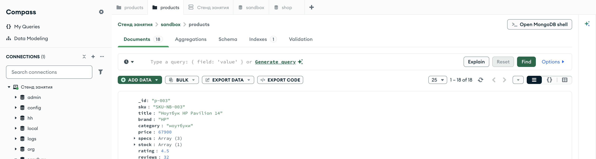

Справочник по MongoDB · модуль 1 · подключение и первые данные
Глава 1.8
Удаление
и как не удалить лишнего
Последняя из четырёх операций — и единственная, у которой нет кнопки «отменить». Разберём delete_one и delete_many, разницу между очисткой коллекции и её удалением, приём «мягкого удаления» и порядок действий, который защищает от потери данных.
«У удаления нет отмены: данные возвращаются только из копии.»
- Категория
- Операции над данными
- Уровень
- Начальный
- Связанные темы
- Фильтры, обновление, восстановление стенда
- Зачем это знать
- Удалять ровно то, что задумано, и понимать цену ошибки
§1delete_one: один документ
Аргумент один — фильтр. Метод удаляет первый подходящий документ и возвращает результат с числом удалённых.
box = client["sandbox"]["products"] res = box.delete_one({"_id": "p-020"}) print("удалено:", res.deleted_count)
auto box = client["sandbox"]["products"]; auto res = box.delete_one(make_document(kvp("_id", "p-020"))); std::cout << "удалено: " << res->deleted_count() << std::endl;
box := client.Database("sandbox").Collection("products") res, _ := box.DeleteOne(ctx, bson.D{{Key: "_id", Value: "p-020"}}) fmt.Println("удалено:", res.DeletedCount)
box = client.use("sandbox").database[:products] res = box.delete_one({ "_id" => "p-020" }) puts "удалено: #{res.deleted_count}"
db.products.deleteOne({ _id: "p-020" }) // { acknowledged: true, deletedCount: 1 }
удалено: 1
Если ничего не нашлось, ошибки не будет — число удалённых окажется нулём. Это тот же принцип, что и у find_one: отсутствие данных не считается сбоем. Поэтому результат нужно проверять: ноль означает, что документ либо уже удалён, либо фильтр написан не так, как задумано.
res = box.delete_one({"_id": product_id}) if res.deleted_count == 0: raise LookupError(f"товар {product_id} не найден")
auto res = box.delete_one(make_document(kvp("_id", product_id))); if (res->deleted_count() == 0) { throw std::runtime_error("товар не найден: " + product_id); }
res, err := box.DeleteOne(ctx, bson.D{{Key: "_id", Value: productID}}) if err != nil { return err } if res.DeletedCount == 0 { return fmt.Errorf("товар %s не найден", productID) }
res = box.delete_one({ "_id" => product_id }) raise KeyError, "товар #{product_id} не найден" if res.deleted_count.zero?
§2delete_many: все подходящие
Тот же фильтр, но удаляются все документы, которые под него подошли.
res = box.delete_many({"category": "аксессуары"}) print("удалено:", res.deleted_count) print("осталось:", box.count_documents({}))
auto res = box.delete_many(make_document(kvp("category", "аксессуары"))); std::cout << "удалено: " << res->deleted_count() << std::endl; std::cout << "осталось: " << box.count_documents(make_document()) << std::endl;
res, _ := box.DeleteMany(ctx, bson.D{{Key: "category", Value: "аксессуары"}}) fmt.Println("удалено:", res.DeletedCount) count, _ := box.CountDocuments(ctx, bson.D{}) fmt.Println("осталось:", count)
res = box.delete_many({ "category" => "аксессуары" }) puts "удалено: #{res.deleted_count}" puts "осталось: #{box.count_documents({})}"
удалено: 2 осталось: 18
Аксессуаров было три, а удалилось два: один из них, кабель p-020, удалён строкой выше. Отсюда свойство, которое отличает удаление от остальных операций: оно необратимо и меняет данные, на которых построен следующий запрос. Числа, снятые до удаления, после него уже не воспроизвести.
§3Порядок «посчитать → посмотреть → удалить»
Перед удалением тот же фильтр выполняют на чтение. Три шага вместо одного:
query = {"category": "аксессуары", "price": {"$lt": 2000}}
# 1. Сколько документов попадёт под удаление
print("под фильтр попало:", box.count_documents(query))
# 2. Какие именно — глазами, не наугад
for doc in box.find(query, {"_id": 1, "title": 1, "price": 1}).limit(10):
print(" ", doc)
# 3. И только теперь — удаление тем же фильтром
res = box.delete_many(query)
print("удалено:", res.deleted_count)
auto query = make_document(kvp("category", "аксессуары"), kvp("price", make_document(kvp("$lt", 2000)))); // 1. Сколько документов попадёт под удаление std::cout << box.count_documents(query.view()) << std::endl; // 2. Какие именно — глазами, не наугад for (const auto& doc : box.find(query.view())) std::cout << " " << bsoncxx::to_json(doc) << std::endl; // 3. И только теперь — удаление тем же фильтром auto res = box.delete_many(query.view()); std::cout << "удалено: " << res->deleted_count() << std::endl;
query := bson.D{
{Key: "category", Value: "аксессуары"},
{Key: "price", Value: bson.D{{Key: "$lt", Value: 2000}}},
}
// 1. Сколько документов попадёт под удаление
count, _ := box.CountDocuments(ctx, query)
fmt.Println("под фильтр попало:", count)
// 2. Какие именно — глазами, не наугад
cursor, _ := box.Find(ctx, query, options.Find().SetLimit(10))
var rows []bson.M
cursor.All(ctx, &rows)
// 3. И только теперь — удаление тем же фильтром
res, _ := box.DeleteMany(ctx, query)
fmt.Println("удалено:", res.DeletedCount)
query = { "category" => "аксессуары", "price" => { "$lt" => 2000 } }
# 1. Сколько документов попадёт под удаление
puts "под фильтр попало: #{box.count_documents(query)}"
# 2. Какие именно — глазами, не наугад
box.find(query, projection: { "_id" => 1, "title" => 1, "price" => 1 })
.first(10).each { |doc| puts " #{doc.inspect}" }
# 3. И только теперь — удаление тем же фильтром
puts "удалено: #{box.delete_many(query).deleted_count}"
Фильтр в трёх местах должен быть одной и той же переменной, а не тремя похожими литералами: расхождение между «посмотрел» и «удалил» и приводит к потерям. Число из первого шага сверяется с deleted_count из третьего — если они разошлись, между шагами данные изменил кто-то ещё.
Ошибка в имени поля при чтении даёт пустой результат — вы её заметите. Ошибка в имени поля при удалении даёт пустой фильтр по смыслу и совпадает со всеми документами, если поле в фильтре пропало целиком. Разница между {"categoryy": "аксессуары"} (удалит ноль) и {} (удалит всё) — один символ невнимательности.
§4find_one_and_delete
Иногда удаляемый документ нужен: записать в журнал, положить в архив, вернуть в ответе. Метод find_one_and_delete удаляет и возвращает документ одним действием.
doc = box.find_one_and_delete({"category": "смартфоны"}) print(doc["_id"], doc["title"], doc["price"])
auto doc = box.find_one_and_delete( make_document(kvp("category", "смартфоны"))); std::cout << doc->view()["title"].get_string().value << std::endl;
var doc bson.M box.FindOneAndDelete(ctx, bson.D{{Key: "category", Value: "смартфоны"}}).Decode(&doc) fmt.Println(doc["_id"], doc["title"])
doc = box.find_one_and_delete({ "category" => "смартфоны" }) puts "#{doc['_id']} #{doc['title']}"
p-007 Смартфон Samsung Galaxy A55 32990
Смартфон Xiaomi Redmi Note 13
p-006 Смартфон Xiaomi Redmi Note 13
p-008 Смартфон Apple iPhone 15
Вариант «прочитать, потом удалить» двумя запросами хуже: между ними документ может изменить или удалить другой процесс, и в архив уедет не то, что удалилось. Соображение то же, что и у $inc в прошлой главе: одна операция на сервере надёжнее двух по отдельности.
Рядом стоят find_one_and_update и find_one_and_replace: они возвращают документ до или после изменения (параметр return_document). Типичное применение — очередь задач: забрать одну задачу и одновременно пометить её взятой, чтобы её не взял второй обработчик.
§5Очистить или удалить: delete_many({}) и drop()
Два похожих действия с разными последствиями.
res = box.delete_many({}) print("удалено:", res.deleted_count) # 17 print("коллекция есть:", "products" in db.list_collection_names()) # True
auto res = box.delete_many(make_document()); std::cout << "удалено: " << res->deleted_count() << std::endl; // 17 // коллекция осталась: она по-прежнему в списке for (const auto& name : db.list_collection_names()) std::cout << name << " ";
res, _ := box.DeleteMany(ctx, bson.D{}) fmt.Println("удалено:", res.DeletedCount) // 17 names, _ := db.ListCollectionNames(ctx, bson.D{}) fmt.Println("коллекции:", names) // products на месте
res = box.delete_many({}) puts "удалено: #{res.deleted_count}" # 17 puts "коллекция есть: #{db.collection_names.include?('products')}"
box.drop() print("коллекция есть:", "products" in db.list_collection_names()) # False
box.drop(); // в списке коллекций products больше нет for (const auto& name : db.list_collection_names()) std::cout << name << " ";
box.Drop(ctx) names, _ := db.ListCollectionNames(ctx, bson.D{}) fmt.Println("коллекции:", names) // products исчезла
box.drop puts "коллекция есть: #{db.collection_names.include?('products')}" # false
| Действие | Документы | Коллекция | Индексы | Скорость |
|---|---|---|---|---|
delete_many({}) | удаляются по одному | остаётся | остаются | зависит от числа документов |
drop() | исчезают вместе с коллекцией | удаляется | удаляются | мгновенно |
Разница проявляется на настроенной коллекции. Если у неё были индексы и правила проверки формы документа, drop() уносит их вместе с коллекцией: новая создастся при первой записи уже без них. Для перезаливки учебных данных это неважно, для рабочей базы — важно очень.
Базу целиком удаляет client.drop_database("sandbox"). Команда короткая, последствия необратимые: восстанавливать придётся из резервной копии.
§6Мягкое удаление
В рабочих системах документы часто не удаляют вовсе, а помечают удалёнными. Технически это уже не удаление, а обновление.
from datetime import datetime, timezone box.update_one( {"_id": "p-003"}, {"$set": {"deleted_at": datetime.now(timezone.utc)}})
auto now = bsoncxx::types::b_date{std::chrono::system_clock::now()}; box.update_one( make_document(kvp("_id", "p-003")), make_document(kvp("$set", make_document(kvp("deleted_at", now)))));
box.UpdateOne(ctx, bson.D{{Key: "_id", Value: "p-003"}}, bson.D{{Key: "$set", Value: bson.D{ {Key: "deleted_at", Value: time.Now().UTC()}}}})
box.update_one( { "_id" => "p-003" }, { "$set" => { "deleted_at" => Time.now.utc } } )
visible = {"deleted_at": {"$exists": False}}
for doc in box.find(visible):
...
auto visible = make_document(kvp("deleted_at", make_document(kvp("$exists", false)))); for (const auto& doc : box.find(visible.view())) { // ... }
visible := bson.D{{Key: "deleted_at",
Value: bson.D{{Key: "$exists", Value: false}}}}
cursor, _ := box.Find(ctx, visible)
visible = { "deleted_at" => { "$exists" => false } }
box.find(visible).each do |doc|
# ...
end
Выбор между настоящим и мягким удалением — это решение об устройстве системы, а не о синтаксисе. Заказы, платежи, документы пользователей почти всегда удаляют мягко; черновики, временные записи и кэш — окончательно. Требования закона тоже участвуют: удаление персональных данных по требованию человека должно быть настоящим.
§7Удаление в Compass
В списке документов у каждого есть корзина: наведите курсор — появятся значки правки и удаления. Compass спрашивает подтверждение и показывает, что именно удаляет.

sandbox.products после удаления кабеля и двух аксессуаров: счётчик показывает 1 – 18 of 18 — ровно то число, что вернул count_documentsУдалить документ можно и мышью, по одному:
Удаление пачкой в Compass делают иначе: задают фильтр в строке поиска, а затем в меню коллекции выбирают нужное действие. Это тот же delete_many, и правило из §3 действует и здесь: сначала смотрят на счётчик под строкой фильтра — он и покажет, сколько документов исчезнет.
sandbox.products после двух удалений из §§1–2: вкладка Documents показывает 18, счётчик — 1 – 18 of 18Кадр снят на песочнице, в которой перед этим выполнены ровно те запросы, что разобраны выше: правка из главы 1.7, затем delete_one и delete_many. Из двадцати одного документа осталось восемнадцать — и никакой команды «отменить» для этих трёх уже нет.
§8Восстановление стенда
Всё, что мы удалили за эту главу, возвращается одной командой — потому что данные лежат в файлах репозитория, а не только в базе.
cd mongodb-practice/stend bash load.sh # sandbox.products ← sandbox.products.json # shop.orders ← shop.orders.json # …
Правило здесь рабочее, а не учебное: данные должны восстанавливаться из репозитория или из резервной копии, а не существовать в единственном экземпляре на сервере. Проверка простая — если базу удалить целиком, восстановление должно занимать минуты.
§9Частые ошибки
| Что написано | Что происходит | Как правильно |
|---|---|---|
delete_many({}) вместо delete_one | Коллекция пуста. Отменить нельзя | Пустой фильтр — только осознанно, при перезаливке |
delete_one(query) в цикле по списку | Медленно: обращение к серверу на каждый документ | Один delete_many({"_id": {"$in": ids}}) |
| Результат не проверяется | Пользователю сказано «удалено», хотя deleted_count равен нулю | Проверять deleted_count и отвечать честно |
| Прочитать, потом удалить двумя запросами | Между запросами документ мог измениться — в архив уедет не то | find_one_and_delete |
drop() на коллекции с индексами | Индексы и правила проверки исчезли вместе с коллекцией | delete_many({}), если нужно сохранить настройки |
| Что написано | Что происходит | Как правильно |
|---|---|---|
delete_many(make_document()) вместо delete_one | Коллекция пуста. Отменить нельзя | Пустой фильтр — только осознанно, при перезаливке |
delete_one в цикле по списку | Медленно: обращение к серверу на каждый документ | Один delete_many с $in |
| Результат не проверен на пустоту | Разыменование пустого optional вместо честного ответа | if (res) res->deleted_count() |
| Прочитать, потом удалить двумя запросами | Между запросами документ мог измениться — в архив уедет не то | find_one_and_delete |
drop() на коллекции с индексами | Индексы и правила проверки исчезли вместе с коллекцией | delete_many(make_document()), если нужно сохранить настройки |
| Что написано | Что происходит | Как правильно |
|---|---|---|
DeleteMany(ctx, bson.D{}) вместо DeleteOne | Коллекция пуста. Отменить нельзя | Пустой фильтр — только осознанно, при перезаливке |
DeleteOne в цикле по срезу | Медленно: обращение к серверу на каждый документ | Один DeleteMany с $in |
DeletedCount не проверен | Пользователю сказано «удалено», хотя не удалилось ничего | Проверять res.DeletedCount и отвечать честно |
FindOneAndDelete без проверки ErrNoDocuments | Пустая структура принимается за удалённый документ | Сравнить ошибку с mongo.ErrNoDocuments |
Drop(ctx) на коллекции с индексами | Индексы и правила проверки исчезли вместе с коллекцией | DeleteMany(ctx, bson.D{}), если нужно сохранить настройки |
| Что написано | Что происходит | Как правильно |
|---|---|---|
delete_many({}) вместо delete_one | Коллекция пуста. Отменить нельзя | Пустой фильтр — только осознанно, при перезаливке |
delete_one в цикле по массиву | Медленно: обращение к серверу на каждый документ | Один delete_many({ "_id" => { "$in" => ids } }) |
| Результат не проверяется | Пользователю сказано «удалено», хотя deleted_count равен нулю | Проверять deleted_count и отвечать честно |
find_one_and_delete без проверки на nil | NoMethodError при обращении к полям | Проверять результат до чтения полей |
drop на коллекции с индексами | Индексы и правила проверки исчезли вместе с коллекцией | delete_many({}), если нужно сохранить настройки |
§10Проверьте себя
Удаление одного документа вернуло ноль удалённых. Это ошибка?
Нет, это законный ответ: под фильтр ничего не подошло. Ошибки не будет — поэтому результат надо проверять самому и отвечать вызывающему честно.
Чем delete_many({}) отличается от drop()?
Первый удаляет документы, оставляя коллекцию с её индексами и правилами. Второй удаляет коллекцию целиком — вместе с индексами и проверкой формы. Второй быстрее, но после него настройки придётся создавать заново.
Почему удалять «прочитал — удалил» двумя запросами хуже, чем find_one_and_delete?
Между двумя запросами документ может изменить или удалить другой процесс. Тогда вы сохраните в архив одно, а удалите другое. Одна операция на сервере такого разрыва не допускает.
Когда мягкое удаление уместнее настоящего?
Когда данные нужны для истории и отчётов или когда ошибочное нажатие должно быть обратимым: заказы, платежи, документы пользователей. Настоящее удаление остаётся для черновиков, временных записей и случаев, когда удалить обязывает закон.
Какой порядок действий защищает от лишнего удаления?
Посчитать count_documents(query), посмотреть find(query) глазами, удалить delete_many(query) — тем же фильтром из одной переменной, а затем сверить deleted_count с числом из первого шага.
§11Шпаргалка
col.delete_one({"_id": "p-020"})
res.deleted_count
col.delete_many(
{"category": "аксессуары"})
col.delete_many({"_id": {"$in": ids}})
doc = col.find_one_and_delete(
{"_id": "p-008"})
col.delete_many({}) # пусто
col.drop() # нет коллекции
client.drop_database("sandbox")
auto res = col.delete_one(
make_document(kvp("_id", "p-020")));
res->deleted_count()
col.delete_many(
make_document(kvp("category", "аксессуары")));
auto doc = col.find_one_and_delete(filter);
// вернётся optional с документом
col.delete_many(make_document());
col.drop();
client["sandbox"].drop();
res, _ := col.DeleteOne(ctx,
bson.D{{Key: "_id", Value: "p-020"}})
res.DeletedCount
col.DeleteMany(ctx,
bson.D{{Key: "category", Value: "аксессуары"}})
col.FindOneAndDelete(ctx, filter).
Decode(&doc)
col.DeleteMany(ctx, bson.D{})
col.Drop(ctx)
client.Database("sandbox").Drop(ctx)
res = col.delete_one({ "_id" => "p-020" })
res.deleted_count
col.delete_many(
{ "category" => "аксессуары" })
doc = col.find_one_and_delete(filter)
col.delete_many({}) # пусто
col.drop # нет коллекции
client.use("sandbox").database.drop
Итог главы
delete_one убирает первый подходящий документ, delete_many — все; ноль удалённых не считается ошибкой, поэтому результат проверяют. find_one_and_delete удаляет и возвращает документ одной операцией. delete_many({}) оставляет коллекцию с индексами, drop() сносит её целиком. Перед любым удалением фильтр сначала считают и смотрят — это дешевле любого восстановления. На этом четыре базовые операции разобраны: дальше практическая работа, где они соберутся в одну прикладную задачу.